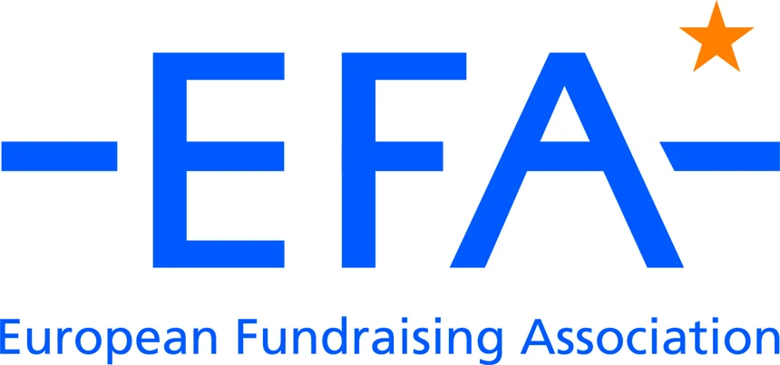
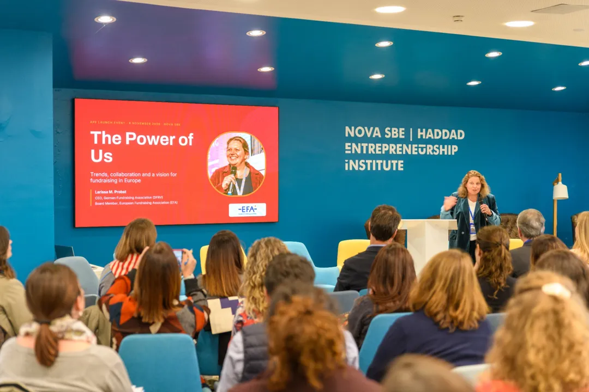

A Associação Portuguesa de Fundraising (APF) passou a integrar a European Fundraising Association (EFA), a rede europeia que reúne associações e organizações dedicadas ao desenvolvimento do fundraising. A adesão reforça a ligação de Portugal a uma comunidade internacional empenhada na partilha de conhecimento, na cooperação e na valorização da profissão.

A EFA promove a colaboração entre organizações nacionais de fundraising, incentivando a troca de experiências, a disseminação de boas práticas, a qualificação profissional e a reflexão sobre os desafios que se colocam ao setor à escala europeia.
Para a APF, fazer parte desta rede constitui uma oportunidade para aprender com a experiência de outros países, estabelecer pontes com organizações congéneres e contribuir para o debate europeu sobre o futuro do fundraising e da filantropia.
Uma ligação entre Portugal e a Europa
Esta dimensão internacional esteve já presente no lançamento oficial da APF, realizado a 6 de novembro de 2026, na Nova SBE, que contou com a participação de Larissa Probst, membro da direção da EFA. A integração na rede europeia dá continuidade a esse diálogo e reforça o compromisso da Associação com a colaboração internacional e a profissionalização do fundraising em Portugal.

Num contexto em que as organizações enfrentam desafios crescentes de sustentabilidade, confiança e mobilização de recursos, o contacto com experiências internacionais pode ajudar a identificar soluções, fortalecer competências e promover práticas de angariação de fundos éticas e eficazes.
Com esta adesão, a APF reafirma a sua ambição de contribuir para um setor de fundraising mais forte, reconhecido e conectado, colocando a cooperação e a aprendizagem contínua ao serviço das pessoas, organizações e causas em Portugal.
Saiba mais sobre o trabalho da European Fundraising Association e acompanhe as iniciativas da APF através dos seus canais de comunicação.